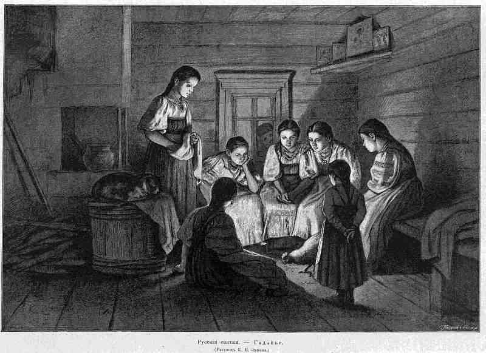

Happy New Year and New Beginnings!
Happy New Year!
Welcome back!
I'll dive straight into today's topics:
- The twelve nights
- More wrapping up and letting go
- A bunch of Revit API discussion forum threads
- Determining the total family instance transformation
The Twelve Nights
Once again, we survived the Twelfth Night, the end of this special twelve-day turning point of the year, also known as Rauhnächte or 'raw nights' in German, full of special depth and significance, related to the differences between the lunar and solar cycles, beginning with Christmas, Hanukkah, Celtic Samhain, Druid Alban Arthan, and many other sacred traditions.
A time of confusion, breaking things, going wrong, calming down, going slowly, contemplation, relaxing into peace and quiet.

Congratulations on coming through intact, and a Happy and Harmonious New Year to you!
More Wrapping Up and Letting Go
I left you last year very busy wrapping up and citing the wise words by Victor Hugo on facing the future and letting go...
I have been busy with both during the break, discussing with my colleagues about starting a new blog focussed on 3D web topics.
We have been preaching to you about the DevDays 10x theme, and, as always, it seems appropriate to me to eat our own dog food.
Several happy changes make this easier for me: new colleagues joined the AEC workgroup, starting to blog busily in their own right, many questions on the Revit API have been answered here and elsewhere, the number of cases seem stable to me in the Western hemisphere, growing most in the Eastern, and the Revit API discussion forum is steadily providing more answers still.
A Bunch of Revit API Discussion Forum Threads
In fact, I spent part of yesterday chipping in there myself as well, addressing many topics:
- Revit build version to update release number
- Mouse over context help
- Dockable panel using Windows Forms C#
- Compare and combine data tables
- How to export an image from a specific view using Revit API in C#
- Revit 2015 seems incomplete
- Revit API regarding walkthroughs
- Selecting a element and viewing its properties in a text box
- Determine outer surface of element
- CAD import within family and how to delete the associated import
- API access to a void form in a conceptual model
Determining the Total Family Instance Transformation
I also discussed a couple of issues off-line, although I always try to avoid that as much as possible, in order to optimise the global sharing of information that we are all contributing to.
Here is one of them:
Question: I am traversing all the Revit database elements and determining their geometry.
For this, I need to retrieve the transformation matrix, especially for family instance elements, e.g. like this:
FamilyInstance inst = e as FamilyInstance; Transform transform = inst.GetTransform();
I am converting this transformation to a 4x4 matrix for further use in my add-in.
I tried lots of ways to retrieve the proper transformation from the transform above with no success.
The instance from the model gets misplaced after processing.
If I set the identity matrix on each instance, it works fine, but for supporting instancing I need to take the proper transform into consideration.
Can you please guide me how to determine the proper transformation for the Revit instance so that I can support instancing in my add-in?
Answer: There are several different possible ways in which family instance geometry may be transformed into the placement in the model.
The only sample that I fully trust to properly handle all the different combinations is the Revit SDK ElementViewer sample.
I would suggest testing that on your specific family instances and models and debugging what exact steps it traverses to achieve the required transformation.
I worked though parts of the same process when implementing my OBJ exporter, and also document some problems that I ran into that sound similar to your issue:
- OBJ Model Export Considerations
- OBJ Model Exporter Take One
- OBJ Model Exporter with Colours
- OBJ Model Exporter with Multiple Solid Support
- OBJ Model Exporter with Transparency Support
However, all of these complexities can be avoided completely by using the custom exporter framework instead.
Have you taken a look at that?
Would that be more suitable and easier to use to fulfil your needs?